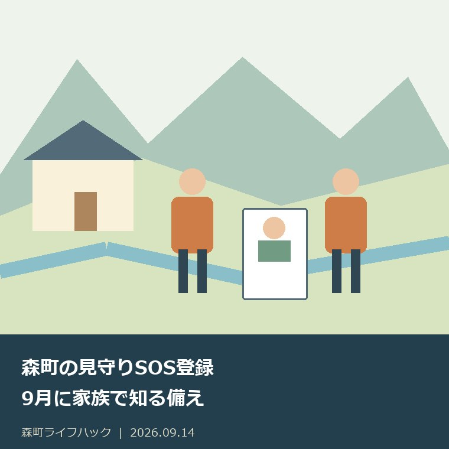
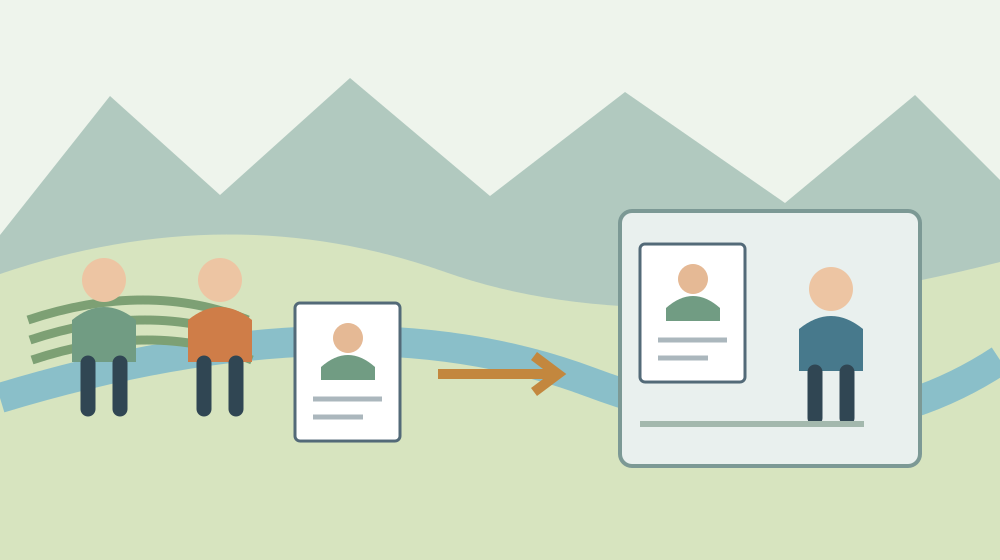

森町の見守りSOS登録｜9月に家族で知る備え
／ 手続き・制度

Q. 森町の見守りSOS登録は、何のためにしておくものですか？
森町の認知症高齢者等の見守り・SOSネットワーク広域連携事業は、事前登録情報を町と県警察で共有し、行方不明時の早期発見・保護に備えます。2026年4月1日回覧では本人の顔写真・全身写真を案内しています。相談先は森町地域包括支援センター0538-85-6341。今日は本人と案内を一緒に読み、登録条件や情報の扱いで聞きたい点を一つ残してください。
見守る家族の負担と、本人が外へ出たい気持ち
森町で親の暮らしを支える家族は、食事や通院だけでなく、帰宅時刻や外出先にも気を配っています。仕事中に電話を確認し、離れて暮らしていれば近所の方へ様子を聞くこともあるはずです。心配だから目を離せない、その状態を一人の頑張りだけで続ける負担は軽くありません。
外出に不安がある本人にも、買物をしたい、知っている道を歩きたいという思いがあります。安全を考える家族の気持ちと、本人が続けたい暮らしの両方を話せる時間が必要です。私は、登録の紙を前にしても、まず「何をやめさせるか」だけの話にしたくありません。
私、大石浩之（磐田市／不動産業）は、家を持ち続けるかを考える前に、そこで暮らす人と支える人の段取りを見たいと思います。この記事は、森町の見守りSOS登録を、本人と家族が知るための入口です。2026年9月14日に確認した公表資料と、私の考えを分けて記載します。
この記事を読んでいる時点で本人の行方が分からない場合は、事前登録の準備を先にしないでください。袋井警察署は、お年寄りなどの未帰宅事案について早めの連絡を案内しています。ここから先の「案内を一緒に読む」は平常時の備えであり、捜索に関する連絡を待つ理由ではありません。
9月は認知症月間、9月21日は認知症の日
厚生労働省の2026年度「認知症の日／認知症月間」のページでは、毎年9月21日を認知症の日、9月を認知症月間と案内しています。根拠として、2024年1月施行の共生社会の実現を推進するための認知症基本法を挙げています。9月は、関心と理解を深める時期です。
私は、認知症月間を家族の宿題を増やす月にはしたくありません。普段から見守りを続けている方へ「まだ準備が足りない」と言うための日付ではないからです。森町の回覧にある一つの案内を開き、家族が知っていることと、本人が説明を聞きたいことを確かめる機会にできればと思います。
2026年4月1日の森町回覧に載る見守りSOS事業には、9月21日を登録期限とする記載はありません。認知症の日があることと、町の手続きの締切があることは別です。今月の話題をきっかけにする場合も、期限が迫っているかのように本人へ説明しないようにしてください。
森町の事前登録で共有するのは、もしものときの情報
森町の2026年4月1日回覧PDF20ページに載っている正式名称は「認知症高齢者等の見守り・SOSネットワーク広域連携事業」です。町へ事前登録し、行方不明時の早期発見・保護に備える仕組みです。安心して外出できる連携体制を整えるという目的が示されています。
町資料では、行方不明になる心配がある高齢者の家族等に向けた案内となっています。事前に登録された情報は町と県警察で共有すると書かれています。登録に必要なものとして挙がるのは、本人の写真である顔写真と全身写真です。申込み・問合せ先は町の地域包括支援センター係です。
「SOS」という名前だけを見ると、本人が何かのボタンを押して知らせる機器を想像する方もいるかもしれません。しかし、この町資料が説明している中心は、町と県警察の情報共有です。位置を常時追跡するサービスや、端末の貸出しをこの案内だけで約束していると読むことはできません。
私は、事業名より「何を前もって渡し、誰と共有するのか」を先に説明する方が、本人も家族も話しやすいと考えます。登録したら毎日の外出確認がすべて不要になる、という意味ではありません。外出を支える日常の工夫と、もしものときに備える情報を、別の役割として理解できます。
| 町資料で確認できたこと | 相談前に知っておく内容 |
|---|---|
| 事業の役割 | 行方不明時の早期発見・保護への備え |
| 事前登録情報の共有先 | 町と県警察 |
| 掲載されている必要なもの | 本人の顔写真・全身写真 |
| 窓口 | 森町地域包括支援センター 0538-85-6341 |
良い点：家族の記憶だけに頼らない備えを持てる
森町の見守りSOS事業は、本人に関する情報を町と県警察が前もって共有する形になっています。もしものときに家族だけが情報を抱えている状態を避けるための入口です。私は、心配する人へ注意力をさらに求めるだけでなく、情報を受け取る相手が示されている点を評価します。
家族が仕事や通院で対応できない時間もあります。私は、いつでも一人の家族が説明できることを当然の前提にしない方がよいと思います。事前登録に加え、連絡を受ける人や資料の保管場所を家族で確認しておけば、急な場面で誰に聞けばよいかを探す負担を減らす備えになります。
森町「高齢者のための相談窓口」は、本人だけでなく、家族や地域の人、ケアマネジャーなどからも相談を受けると案内しています。内容には生活や健康、財産管理、家族の介護疲れや悩みも含まれます。見守りSOSの登録だけを切り離さず、困っている暮らしの状況を相談できる入口です。
私は、「登録するほどのことなのか分からない」という段階にも、相談先が必要だと考えます。心配の大きさを家族だけで判定する前に、何が起きているかを窓口へ伝えられます。相談を受けてもらえることと、事業の登録対象になることは同じではありませんが、確認する相手は見つけられます。
親の介護で最初の窓口を探す段取りは、親の介護が始まったら最初に相談する記事で整理しています。施設やサービスの選択を先に決める必要はありません。外出について何が心配なのか、家族がどこで疲れているのかを、一つずつ伝える準備から始められます。
注文したい点：登録後の更新と情報の扱いまで知りたい
森町の回覧PDF20ページは事業概要の一覧であり、申請書の全項目や情報を更新する手順までは載っていません。写真のサイズ、紙とデータの提出方法、本人の同意をどう確認するかも、そのページだけでは分かりません。私は、登録しようとする家族には、この先の説明まで必要だと考えます。
私は、本人の情報を共有する以上、誰に渡るかだけでなく、変更や終了をどこへ伝えるかも知りたいと思います。これは情報共有に反対する話ではありません。家族の電話番号、本人の住まい、写真が変わったとき、古いままにしないための段取りを決めておきたいという意見です。
地域の見守りの担い手にも、できることとできないことがあります。近所の方が気に掛けてくれることを、常時対応の約束へ置き換えてはいけません。今日の小さな一歩は、本人と案内を読む際に「近所の人へ何を、誰から伝えるか」を質問として残すことです。共有の範囲は窓口に確かめます。
私は、顔写真を用意することと、その写真を家族の判断だけで広く公開することも分けたいと考えます。町と県警察への登録情報の共有と、SNSへの投稿は同じ手続きではありません。写真を送る場所が分からないなら、登録窓口へ提出方法を確認し、出所の不明なフォームへ送らないでください。
費用、登録に必要な日数、診断や介護認定に関する具体的条件も、今回の回覧の事業欄では確認できませんでした。私は、空欄を「無料」「誰でも」「その場で完了」と埋めません。窓口へ自分の状況を伝え、該当条件と必要資料を聞けば、来所や撮影のやり直しを減らす材料になります。
対案・結論：今日は本人と案内を一緒に読む
2026年9月14日の今日の一歩は、本人と森町の登録案内を一緒に読むことです。PDF20ページにある事業名、町と県警察で情報を共有する説明、写真の案内を順に見ます。一度にすべての欄を理解させようとせず、本人が引っ掛かった言葉を一つ残してください。
私なら、「外へ出るときの心配について、町に先に伝えておく仕組みがある」と話し始めます。これは私の提案する説明で、窓口が指定した文ではありません。本人が気にするのが写真なのか、誰に知られるかという点なのか、家族が考える前に聞く時間を持ちたいと思います。
案内を一緒に読むことが難しい場合も、家族だけで説明の仕方や条件を決めつけません。「本人へどう説明すればよいか」「登録について本人の意向をどう確認するか」を地域包括支援センターへ相談できます。急いで署名をもらう方法を探すより、迷っている点を窓口へ渡すための準備です。
森町地域包括支援センターの電話は0538-85-6341です。町の相談窓口ページでは、森町森50番地の1、森町保健福祉センター内と案内されています。受付は月曜～金曜8時30分～17時15分で、祝日と年末年始を除きます。登録相談で出向く前には、予約や持参物の要否を聞いてください。
窓口には、「見守りSOSの事前登録について、本人と案内を読みました。写真の提出方法と、本人の意向を確認する手順を教えてください」と伝えられます。本人の状況によって質問は変えて構いません。説明を聞いた日と、次に用意するものを書けば、一度の電話で完結しなくても引き継げます。

顔写真と全身写真を、本人と確かめる
森町の回覧は、登録に必要なものとして顔写真と全身写真の両方を挙げています。顔だけを切り抜いた画像で全身写真の代わりになるとは判断できません。具体的な寸法や提出形式を確認したうえで、本人の手元にある写真から使えるものがあるかを探します。
私は、写真を新しく撮る前に、いつ撮ったものか、本人の現在の見た目と大きく違わないかを家族で確認する方法を勧めます。これは町が定めた写真の撮影期限ではなく、準備の考え方です。古い写真しか見つからない場合には、撮り直す必要があるかを窓口へ尋ねられます。
写真を確認する時間は、本人が好きな服装や普段使う持ち物を聞く機会にもできます。ただし、服や靴は外出ごとに変わるため、登録時の情報だけで当日の特徴を説明できるとは限りません。平常時に備える写真と、その日に見たことを、同じ情報として扱わないようにします。
家族が写真を保管するなら、誰が必要時に取り出せるかを決めます。一人のスマートフォンにしかなく、本人が仕事中には連絡が取れない状態も考えられます。私は、公開範囲を広げるのでなく、必要な家族が必要な時に探せる保管場所を決める方がよいと思います。
別居の家族へ写真を送るときも、何のための共有かを添え、不要になった複製の扱いを確認します。町へ提出済みの写真が、家族の全員の端末にも必要とは限りません。登録するための情報と、日常の家族連絡で必要な情報を分けて、取り扱う範囲を絞る考え方です。
家族の連絡先と役割を一枚に残す
見守りの準備を家族で共有するなら、まず登録の相談先と、家族の主な連絡担当を一枚に記録します。登録済みか、相談しただけか、写真を準備中かも区別します。誰かが窓口へ電話したという話だけで、登録まで完了したと思い込まないための確認です。
私は、町外で暮らす家族も担える役割を探したいと思います。本人に付き添う人だけでなく、案内を読む人、写真の保管場所を整える人、窓口へ質問をまとめる人という分担があります。現地へ行けない家族が、町内で支える人の判断を増やすだけの連絡役にならない工夫です。
見守りの連絡担当を決めても、本人の財産管理や契約を代わりに行う権限が決まるわけではありません。必要なら、森町の成年後見制度の相談の記事を別の入口として読めます。外出の備えと財産に関する手続きは、同じ家族の課題でも確認事項を分けます。
相談のために森町へ出向く場合は、窓口の開いている時間と自分が相談できる時間の違いにも注意します。森町の相談窓口を予約の要否で分ける記事も、来所前の確認に使えます。本人の付き添いを頼んだあとで持参物が不足すると、家族の移動負担が増えてしまいます。
連絡帳には、本人の希望も短く残せます。「誰に連絡してほしいか」「どの点の説明をもう一度聞きたいか」といった本人の言葉です。家族が決めた内容だけが残ると、担当が交代したとき本人の思いが抜け落ちます。書いた内容を本人と確認できる範囲で確かめることを、私は勧めます。
登録の相談と、いま行方が分からない時の連絡を分ける
袋井警察署「行方不明者」のページは、お年寄りや子供の未帰宅事案があれば早めに連絡するよう案内しています。届出の際には、捜索・手配を速やかに行うため、本人の写真や画像を用意することも記載されています。事前登録を済ませていなくても、登録作業を先に片付ける場面ではありません。
私は、家族の記録で「平常時の登録相談」と「行方が分からない時」を見出しから分けるとよいと思います。地域包括支援センターの受付時間のメモを見て、警察への連絡まで翌営業日に延ばさないためです。事前登録は備えであり、行方不明の発生を自動的に知らせる手続きとは説明されていません。
もしもの場面で分かることを伝えるなら、最後に確認できた時刻と場所、当日の服装、連絡が取れる家族を整理します。不明な点は推測と分けて伝えます。家族の間で何度も確認し直して連絡を遅らせるのでなく、警察の指示に従って必要な情報を補うための考え方です。
大石の視点：本人の分からない点を置き去りにしない
本人と案内を読み、分からない点が一つ分かったなら、今日の前進です。私は、登録という結論をその日に出させることを成果にはしません。家族が安心したい気持ちは自然でも、本人が情報の扱いを理解する時間を飛ばす理由にはならないと考えます。迷いを窓口へ持っていくことから始められます。
私にも、安全の備えを遅らせたくない思いと、本人を急がせたくない思いの間で迷いがあります。だから、登録するかの判断と、相談先を知ることを分けます。平常時には説明を聞く材料を一つ増やす。現在の行方が分からないなら警察へ連絡する。この順番の違いを家族で共有したいと思います。
森町の家で暮らしを続けるには、家の維持費だけでなく、支える人が休める段取りも要ります。家族と地域の見守りを当然の善意として使い続けることはできません。2026年9月14日は、本人と回覧PDF20ページを読む。読んで残った一問を、0538-85-6341へ確かめる材料にしてください。
よくある質問
相談や申請の前に確かめたい点を、次の3問で確認できます。
見守りSOS登録をすると、必ずすぐに見つかりますか？
森町の事前登録は、行方不明時の早期発見・保護に備えるため、登録情報を町と県警察で共有する仕組みです。発見までの時間や発見そのものを保証する案内ではありません。本人の行方が現在分からない場合は、登録手続きや相談窓口の開庁を待たず、警察へ早めに連絡してください。写真や画像も、届出時に役立つ資料として案内されています。
登録の相談先と、準備する写真は何ですか？
森町の2026年4月1日回覧PDF20ページは、本人の顔写真と全身写真を登録に必要なものとして挙げています。申込み・問合せ先は森町地域包括支援センター、0538-85-6341です。写真の寸法、データで提出できるか、申請書や本人の同意を確認する方法は、来所や撮影をする前に窓口へ確認してください。
9月21日までに登録を済ませなければいけませんか？
9月21日は認知症の日で、9月は認知症月間です。今回確認した森町の見守りSOS案内に、9月21日を登録期限とする記載はありません。日付を理由に本人の気持ちを置き去りにせず、まず案内を一緒に読み、登録対象や情報の扱いについて聞きたい点を整理できます。ただし、いま行方が分からない場合は別で、警察への連絡を先にしてください。
登録とは別に、職場や町内会で接し方を学びたい場合の人数と申込みは、 森町の認知症サポーター講座｜5人から学ぶで整理しました。

参考にした公式情報
- 森町『2026年4月1日回覧』PDF20ページ・見守りSOS事業（2026年9月14日確認）
- 森町『高齢者のための相談窓口』（2026年9月14日確認）
- 厚生労働省『認知症の日／認知症月間』2026年度（2026年9月14日確認）
- 袋井警察署『行方不明者』（2026年9月14日確認）
最終確認日：2026-09-14。制度・開催状況は変更される場合があります。最新情報は公式窓口へ、個別の法律・登記・医療上の判断は各専門家へ確認してください。